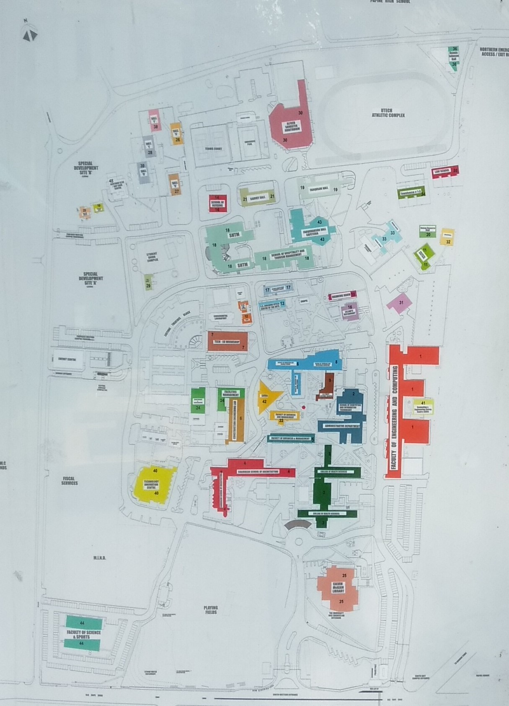

uTour
uTour
THE OFFICIAL VIRTUAL CAMPUS TOOL FOR THE UNIVERSITY OF TEHNOLOGY, JAMAICA
360 VIRTUAL TOUR
This shows photographs illustrating different areas on UTECH'S CAMPUS
CAMPUS MAP
The above is a satellite map which incorportes markers of assorted colours pointing to the different places across UTECH'S CAMPUS.
VIRTUAL TOUR WITH AVATAR
This is a video show casing a virtual tour of the campus with the utilization of an avatar as tour guide.

WELCOME
UTECH, Ja is dedicated to improving its customer experience by inviting prospective students as well returning students to benefit from an understanding of what is happening in and around the campus through the utilization of its virtual tour tools.
TIP 🤔:FINDING YOUR CLASSROOM
For Example, lets look for the class 2B1.
- '2', is the building number. All faculty and school buildings are numbered. These numbers are found on the outside of each building. For example, the building number for The School of Computing and Information Technology is Two (2).
- 'B', is the floor location. Each floor is classified alphabetically in ascending order. For example, the first floor would be 'A' and the second floor 'B'.
- '1', is the classroom's number. So if there are 15 classes on floor B. They are numbered from 1-15. Example, 2B1, 2B2, 2B3, etc.
ROUTES FOR UNIVERSITY EVENTS
-
